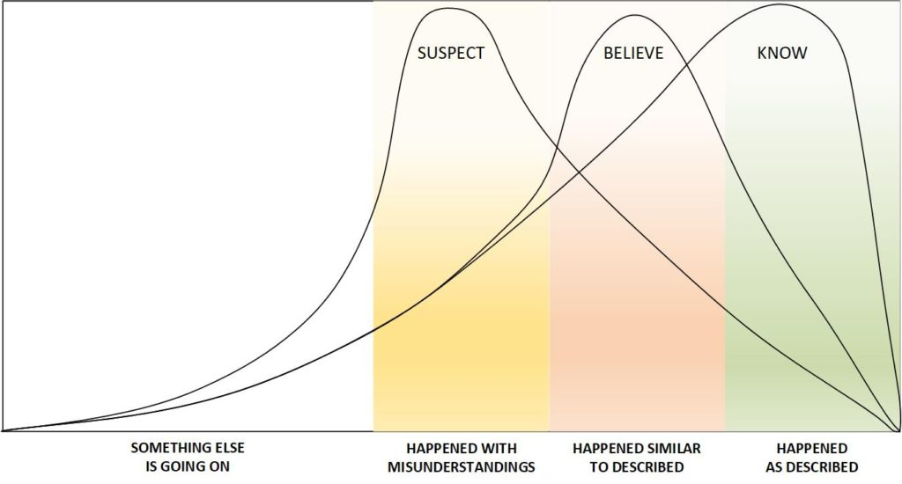
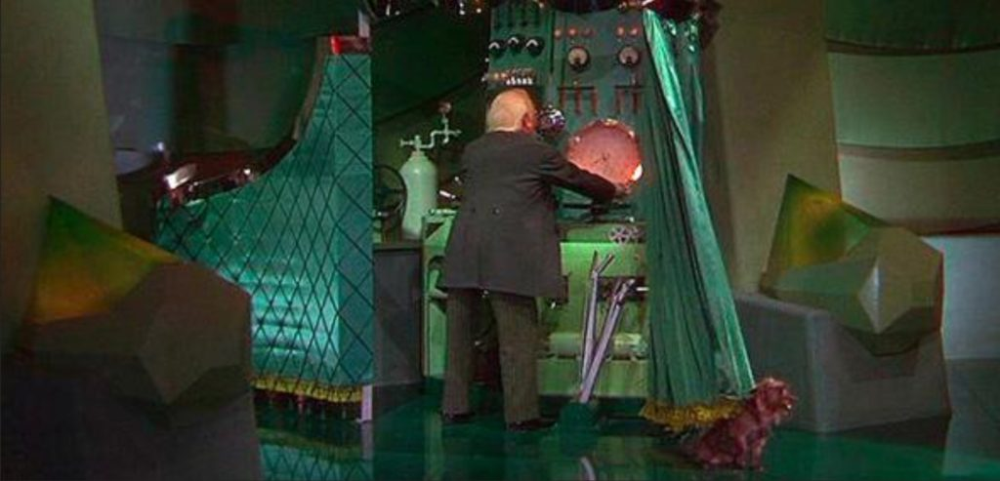

In early October 2021, I established a task request asking for those versed in LD and other skills to investigate whether or not there were any “backdoors” or other ways in and out of the “Old Empire” “Prison Complex” that we are all (unfortunately) part of. By the second week of October the results began to pour in.
This is a posting of the results.
Volunteers
I asked in this post if any MM readership would be interested in joining The Domain to help rescue their “Lost Battalion”.
The response was overwhelmingly positive.
And then within a few days after the readership started adding affirmations and confirmations that they wish to help The Domain, be a Rufus, and do whatever they can contribute, many many MANY of them started writing to me privately.
They were (for the most part) terrified.
Within hours or days of making a verbal affirmation that they indeed wanted to assist The Domain, all of them, every single one of them, experience sleep paralysis and horrible fears and manifestations. All of which is very similar to “abduction events”.
That they were “hijacked” in their dream state and all sorts of operations and procedures occurred. For them, it was truly frightening.
However, I said then, and I will say now…
- In the non-physical reality, thoughts take on tangible form.
- Fears are used to control you.
- So when you experience any type of help, your fear-defenses (part of the “Old Empire” programming), will try to make you fight and prevent the assistance.
So keep in mind…
- To help The Domain, certain retardations and alterations to your inmate human body must be undone.
- This requires an operation; a procedure.
- The Domain will undo those alterations when you join in the effort. They will conduct an operation and perform a procedure to remove those “chains” and “blocks” that you have shackled to your non-physical body.
- Do not fear it. You NEED to have it done, whether you want to help the Domain or not.
- It is a medical procedure.
Many people have commented on this event as a “dream”, or a “Join the Domain related dream”.
Perhaps one of the best explanations of what goes on is from GuyFromAfrica…
GuyFromAfrica comments
So I got the “Join the Domain Dream”.
I could “see” the Type-1. He was somewhere seated.
Then There was MM. I guess as an intermediary.
They didn’t speak literally but I could hear their voice and understand what they were saying. He said (The Type-1) that I would have to make a decision and because they knew who I was (my attributes, character and more) that I was the only one who could do it and see it to the end.
I also [1] got the paralysis and I literally could not move in the dream. someone had to drag me out. ( In the physical too.) Damn weird man. I just laid on the bed half asleep unable to move.
All this happened after I decided to join the domain but coz am still on my pause I had to wait till at least next month. (I think it was due to my thoughts.) [2]
They have [3] helped in suppressing somethings that were really disturbing that’s what they said and showed me. (Actually true. Never gonna go back.)
I just hope that shit doesn’t go down. NO FEAR. JUST CONCERNED. [4]
MM Comments on GuyFromAfrica
[1] This is what really freaks people out. Don’t be afraid. This is necessary. Your consciousness must be removed from your physical and non-physical bodies for the operation to occur.
[2] You do not have to be in a campaign or out of it to have this happen. The moment you “think” and make up your mind to help The Domain, you telegraph a message to them. They monitor all activity on MM. You all should be well aware of this.
[3] One of the things that they will do, provided that you are not too freaked out and trembling in fear or anger, will show you why they are doing it, and how it will personally benefit you. In the case of GuyFromAfrica, they showed him the impediments from his life that they are removing.
[4] He was able to discuss this clearly simply because he held his fear in check. Everyone, GuyFromAfrica is certainly a leader in this. Learn from him.
Freaking out folk
So many dear MM readers have been completely freaked out with the speed, and the unexpectedness of having themselves paralyzed and filled with their worst fears. Images of harm, terrible things, violence to their children were (are) commonplace. It’s really terrible fears. Your worst fears. Everything thrown at you to freak you our royally.
It’s all part of the “Old Empire” programming.
As an inmate you are not permitted to change your physical and non-physical bodies. You are inmates. These changes will permit you to “go through” the fence. These changes will allow changes to your world-line templates. These changes will seriously and substantially reduce the conflict and turmoil in your life.
Which is why the “Old Empire” put up these “trigger blocks” to force you to go primal, filled with fear, and resist changes to your physical and non-physical bodies.
If you make a commitment to be a Rufus and assist The Domain in what ever capacity that your have (and most people have absolutely no idea of their abilities), the Domain will undo your chains.
They will “change your out of the inmate uniform”. They will give you an “access pass” to “go through the fence”. They will scrub tracking information, and erase pre-life behavior settings that you have lived with.
It’s all so frightening.
But ah, so exciting.
If you haven’t committed, but want to, and you are sincere and serious. it will be done. Just remember not to freak out. The fears are all part of “Old Empire” programming. They need to be culled and removed. That’s your job to keep those fears of yours in check.
The Task at hand
The specific task call out was posted in THIS ARTICLE.
This is what I asked for…
To be brutally honest, this is an OFFICIAL REQUEST for a volunteer. It is direct request via EBP from The Domain. As I understand it, it is only something that can be done by an inmate with a strong ability to this end. And that this specific type of mission WILL encounter unknowns and if the person encounters any kinds of dangers, they are to retreat and regroup. It’s just a “fact finding” mission. And, for what ever it is worth, they have certain people in mind for this action, and consider them to be very important and valuable assets that must be protected at all costs. (I am to repeat and underline this last sentence.) They are very important and must be protected at all costs.
Background – Backdoors
I argued that something must have happened since the “Old Empire” collapsed. Then with the battles and destruction within this solar system, obviously there was a corruption of the (formerly pristine) Prison Complex.
- The Prison Administration “bailed out”, and left.
- The Prison System has been taken over, and corrupted by very malevolent entities.
It seems to me that there MUST be some kind of “backdoor” that enables these self-serving for-profit entities to corrupt the Prison System for their own purposes.
In cybersecurity, a backdoor is anything that can allow an outside user into your device without your knowledge or permission. Backdoors can be installed in two different parts of your system: Hardware/firmware. Physical alterations that provide remote access to your device. Software. Malware files that hide their tracks so your operating system doesn’t know that another user is accessing your device. A backdoor can be installed by software and hardware developers for remote tech support purposes, but in most cases, backdoors are installed either by cybercriminals or intrusive governments (like the United States) to help them gain access to a device, a network, or a software application. Any malware that provides hackers access to your device can be considered a backdoor — this includes rootkits, trojans, spyware, cryptojackers, keyloggers, worms, and even ransomware.
If there is a “backdoor”, then we can come to the conclusion that the “backdoor” was put there intentionally by one or more of…
- The architects of the “Prison Complex”.
- The administration of the “Prison Complex”.
- A technologically advanced society (not the “Old Empire”) that exploited the prison system intentionally.
- Some kind of dimensional / universe malware.
Background – The advantages of LD talent
Those that have the important ability to LD (Lucid Dream) are in a unique position to reconnoiter towards this end.
It would be a reconnaissance mission.
In military operations, reconnaissance or scouting is the exploration of an area by military forces to obtain information about enemy forces, terrain, and other activities. Examples of reconnaissance include patrolling by troops (skirmishers, long-range reconnaissance patrol, U.S. Army Rangers, cavalry scouts, or military intelligence specialists), ships or submarines, manned or unmanned reconnaissance aircraft, satellites, or by setting up observation posts. Espionage is usually considered to be different from reconnaissance, as it is performed by non-uniformed personnel operating behind enemy lines. -Wikipedia
And if you want to be specific, it is purely espionage. As the LD asset is an inmate in general population.
I can tell you that doing so is very important, and would be greatly appreciated by The Domain. Though, I must caution everyone that LD travel is not to be taken lightly. Dangers abound. I also do not know what the LD asset would discover, or what surprises await them. But I am ABSOLUTELY CONVINCED that they would like some talented assets to volunteer for this task.
To be brutally honest, this is an OFFICIAL REQUEST for a volunteer. It is direct request via EBP from The Domain.
As I understand it, it is only something that can be done by an inmate with a strong ability to this end. And that this specific type of mission WILL encounter unknowns and if the person encounters any kinds of dangers, they are to retreat and regroup.
It’s just a “fact finding” mission.
And, for what ever it is worth, they have certain people in mind for this action, and consider them to be very important and valuable assets that must be protected at all costs. (I am to repeat and underline this last sentence.) They are very important and must be protected at all costs.
Background – Mission parameters
For starters…
- This is a volunteer activity, and there is no dishonor in refusal.
And then,
- You absolutely not reveal who you are or what you are doing.
- You must not engage any subject entities that you encounter. You observe.
The specific tasks are…
- You must identify [1] if there are others, who are not part of the “old empire” prison complex, that are involved in selection of pre-birth world-line template selection and layout.
- You must identify [2] if there are others, who are not part of the “old empire” prison complex, that are using the collected memories or records of memories of other humans for anything other than the original stated purposes.
Reporting and dissemination.
- No matter what your opinions are, you must report what you experience.
- You are to report your findings, no matter how disjointed or confused, and include your associations and thoughts and ideas regarding them. (Some results might be disturbing or distasteful, but you must report everything.)
- MM will publish your findings.
Finally,
- You must vocalize permissions to allow The Domain to observe your operations. You may place restrictions on how they observe and time limitations or windows if that is your desire.
Please kindly know and realize that possession of a EBP would “blow your cover” and thus it is impossible for you to be implanted at this time for this role. Thus this request follows this procedural venue. Finally, there is no dishonor in refusal. The Domain realizes just how seriously dangerous this mission activity is.
Collection of the data
Everyone is different. We all have different abilities and different strengths and weaknesses. Furthermore, our experiences, whether in dreams, LD, or any other format are very personal things.
For instance, when I get messages and comm in my channels in either the ELF or EBP implants the results are very difficult to explain. Most especially how I discern between a message and my own internal thoughts, and external clutter. It’s not easy and takes practice, and when I try to explain it just opens up an entire long train of question after question. The bottom line is you either KNOW that you experienced X, or your BELIEVE you experienced X, or you SUSPECT you experience X.
Each elemental wording has a different degree of validity.

As of late, I have been mercifully been granted physical confirmation “pings” to confirm that I am not letting my imagination get the better of me, but this is not always possible with others.
For me, the “pings” are a rush of endorphins, a physical reaction to my body while simultaneously obtaining a brief message confirmation.
Most people have some “keys” of understanding that will allow them to unlock what they experience. And with this in mind, let’s look at this first report. Here, the tasked agent had a very active dream of significance, and it is mighty confusing…
Task Results – fifth.eschaton
Oct 8th (Directly after reading the Task callout article)
Oh shit. I accidentally saw behind the curtain.
I walked in on an intimate celebrity workshop class led by… you guessed it… Chuck Norris!?
Joe Rogan was there too.
I understood (in a meta-dream analysis sense) that these actors were not specifically important or accurate. They were stand-ins for people of power gaining insights from older mentors.
- Joe Rogan represented XXXXXXX
- Chuck Norris represented YYYYYYYY
There were barrels on the stage and participants had to strip naked, get in the barrel, and pee on each other. The point of the ritual was humiliation.
- A ritual involving humiliation.
Utterly bizarre… I didn’t want to watch but I was told, in no uncertain terms, “THAT’S THE POINT.” Now you’ll remember. They were utterly beyond the pale, but that’s the programmable zone.
- Humiliation is the point.
Any inputs and suggestions from Chuck (bless his soul) were immediately followed, because the decency line had already been crossed.
- Once the person completes the humiliation they are listened to / respected.
They were being programmed with a trauma feedback loop. “We’re doing it, we’ve done it, and now we can do anything.”
- The humiliation sequence is a purging experience to create a new kind of person.
Then, a blonde woman joined the scene. She got in a barrel too, and I got the impression that it was completely upsetting the programming. This is when I saw them. Men were standing behind a red curtain off to the side where I hadn’t noticed.
- A different kind of entity enters the programming environment and upsets the entire process.
Joe, in his programmable state, was beginning to lose his compliance. The woman was totally upsetting the psychodynamic balance in the room.
- Those that had previously accepted the programming now question it.
She said, “My favorite thing in the world is baking pain au chocolat.” The incredibly strange juxtaposition of this statement in a room full of naked men peeing on each other was…. odd.
(I'm so sorry forum readers. Nothing about this was sexual, and couldn't be further from my idea of a fantasy. I'm just presenting my dream as-is. Hope someone has a laugh at least.)
It was a trigger phrase and Joe snapped out of it.
- A trigger phrase or event occurred and the participants were released from their programming.
Programmers are pissed. I’m being ejected.
- The Programmers are upset and the observer is ejected.
Woke up with incredible back pain. Can’t turn my head all day. I have lasting impressions of similarities to L. Ron Hubbard and Tom Cruise. There’s a significant link between his religion and the programming of celebrities.
I also realized that the men behind the red curtain were like a mix of metaphors from Twin Peaks and Wizard of Oz.

Takeaways:
- Investigate L. Ron Hubbard and what he knew.
- Investigate Scientology as it relates to the prison system.
- Investigate actors as favored “clients.”
- Arnold Schwarzenegger was clear in my mind (Sorry, I personally like the dude).
- I’m so sorry – just following orders:
"You are to report your findings, no matter how disjointed or confused, and include your associations and thoughts and ideas regarding them. (Some results might be disturbing or distasteful, but you must report everything.)"
Recon Mission Undertaken at the Request of the Domain Commander: The Volcanic Prison
Notes; DM authorized involvement with The Domain, and specifically approved of them observing his activities and helping them. The Domain altered his non-physical body and he experienced all the paralysis that I have written about above. When he provided this information to me, I was a little taken back that the Domain didn't witness the events themselves, and instead relies on MM here to transcribe and translate for them. It's a mystery to me. But apparently the transcription is very important for them to use the information. Never the less, the feeling that I get is that these espionage activities are something that must be taken very carefully and that there must be absolutely no association with The Domain in so conducting them. In the report below, I have taken the time to parse every nugget of information that DM has provided. I only hope that it serves some benefit.
By [Daegonmagus] compiled 10OCT21.
Introduction:
I think I have something for the Domain Commander. I wasn’t lucid but I am fairly certain this was a good intel hit; though it did come after deliberately trying to enter a lucid state. I have been here before, several times, I am certain of it.
Interested in hearing yours and the Commander’s opinion. There is some concerning things in it regards to rape camps, not sure if you want to delete this part before publishing; it is entirely up to you. I am curious to know if the name I got rings any bells.
Summary:
I come to on some volcanic island. I am not lucid, but operating on “autopilot”.
Not a Lucid Dream. But is a "special" dream. Knowing what I know of DM, I would classify this event as "high quality" Intel.
I have been here before.
This location is one that is familiar to him. in either dreams, LD , memories or all of the above.
A prison has been built into the crater. There are hundreds of people being kept here against their will. These are people’s energetic bodies. I recognize some of them from school.
It is a prison. It is in a confined area. Many people are in the prison against their will; means that they were there either through [1] a corrupted judicial system, [2] got there by bypassing a legal system, or [3] were born into it without any say in the matter. In prison, there are many people who believe that they goat a bad deal. But there is a world of difference between... [A] I was committing crimes, but you know the punishment was way, way beyond what I deserved. It's unfair. Its unjust. And... [B] I didn't commit any crimes at all. I was "railroaded" by a corrupt system, and now "blackballed" for life. The impression that I get from DM is that many of the inmates fell under category "B".
I materialize here.
Other people can’t phase in and out of this place like I do.
DM describes that he has a special affinity for this "place", and special abilities to enter and leave at will.
To begin with, I blend in with the crowd and pretend to be a guard. This gives me the ability to tour some parts of this prison system. I have definitely been here many times before…
This is a familiar place to DM, and perhaps had other missions / adventures associated with it. It is not new to him.
… and there is something very strange going on, sort of like a breakout or a riot.
As he enters it, this time, he notices something unusual and strange going on. To him it appears to be a breakout or a riot. Both of these events describe a situation where the inmates override the protection rules and systems. And in both situations, it is the corrections officers tend to be ill prepared and typically follow procedures and retreat while awaiting backup.
The cells are cut into the rim of the crater, all around it.
I believe this might be a reality brainwashing facility.
This is an important comment. DM suggests that the purpose of this particular structural object / place is a "brainwashing" facility. Which would imply that it is where the amnesia (that we all unfortunately live with) takes place.
The prison complex goes inside the crater, like a good deal of rock has been carved out and the network extends into this rock and underground.
There are green trees inside the crater; it actually looks like a decent island paradise apart from the prison.
The physical details can represent things or not. But what I take from this is that this is a singular place. Like a zit on your face, or a wart on your arm, or a volcano in the middle of the ocean, or an island. It is a singular place. He also says that it appears to be a nice place. Like a calm island, or a well taken cared for campus, or a well up-kept neighborhood.
So I am in this room pretending to be one of the guards and the riot breaks out.
The mind creates the visualization. The information is transferred.
I take the opportunity to go for a bit of tour while the rest of the guards are preoccupied.
DM conducts his espionage activities when he has the opportunity to do so.
I penetrate deep into the network; this thing goes several stories beneath the bottom of the crater.
DM explores deep into the complex. He recognizes that it is an extensive facility and goes very, very deep. It must be enormous. It would be ideal if he could have somehow explored the administration and see what he might discern. However, this kind of exploration is fraught with danger. So it might not be a good thing to do during this particular event. He goes into the lowest levels of the facility trying to find the darkest and deepest secrets.
These subterranean rooms are where they do all the bad shit, torture, reality brainwashing, breeding programs etc whatever it is this island is being used for.
DM finds the ugly activities, etc. All of it is not pleasant.
I have memories of being down here in a similar riot.
Curious statement. I get the impression that these "riots" have been an on-going thing over the many years.
Something happens – I don’t know what exactly – but the volcano is now about to erupt.
Referring specifically to this particular event, it appears that the build-up is reaching a critical juncture; an inflection point of substantive change. Like a volcano.
I decide to head back to surface.
I come across several panicked guards – helmets covering their faces, and khaki colored coveralls, fairly short maybe 5ish feet tall, who are shocked to see me.
Everything is chaos; the six or so guards are trying to evacuate.
This is a representative scene. There is a panic in the corrections officer cadre. There is chaos. And the corrections officers are trying to retreat and disengage.
These guards try to apprehend me, drawing these guns that shoot photon beams or something similar but I annihilate them with a flick of my hand – I am not lucid, but this is a left over reaction from my lucidity expeditions. It is a natural reaction that happens without me even thinking of it when I am threatened.
Thoughts are powerful. Whether in LD state or in dreams. If you believe that you can do something, the chances are that you actually can.
The guards disappear, and I make it to the surface.
One of the prisoners asks me for help, so I decide to help them figuring I can get more information on who is in charge of the place.
It's a scene from one of the Mission Impossible movies, where the one agent is trying to escape from a Russian Prison. Never the less, the root breakdown is that DM assisted in the breakout, and was led on how to make it happen by another inmate.
Within minutes everyone is freed from their cells.
I am now leading a group of about 20 to 30 of these people through these metal lined rooms, over scaffolding, and bitumised pathways that wrap up the edge of the crater.
DM is leading a cluster, or a group of inmates, towards freedom. Not all of them. Just a group of the ones associated with the particular individual that he helped. They are are going upward Z-axis. Downward Z-axis is the horrible torture pits and structures.
For some reason they think getting to the top will solve their problems; I don’t tell them the only way out is through portals they don’t have access to.
I have a vague recollection of coming here via one.
This is important. Everyone believes that the way out; the exit is the opposite of the depths of the structure. But they are wrong. The exit is not the opposite of the obvious. It is something else.
A few more guards appear here and there, but I extinguish them like the others.
Soon it is just me and the prisoners, everyone else has left.
The volcano is raging; there is a definite time constraint we are working against.
It is a race against time. To leave now is preferable than to wait until the entire system collapses.
Regardless, we stop for a breather about half way in a sort of courtyard that has been built upon the scaffolding and under overhanging rock.
There is a woman I know her from school as being Tegan.
One of the guys makes a snide remark about her having sex with someone – possibly him -, basically calling her a slut. I roll my eyes; this is the last shit we need. I feel like punching this guy in the face. It was typical bullshit school children politics.
Tegan is clearly upset and distressed and tries to explain there was a different side of the story and she didn’t want to go into it right then and there, but this guy persists. Tegan eventually ends up replying saying it was not consensual and this guy had raped her. The one calling her a slut goes red, now there is a fucking fight amongst the inmates. Great.
Control mechanisms. "Old Empire" utilizes fear, emotion, anger to side-track inmates and delay them into a maze of other issues instead of focusing on what is directly important. (This must be a characteristic of inhabiting a human body.)
I am angered, but some how keep my composure – was this a trick to turn my attention away from what I was here for?
Yes. It was.
Did Tegan mean this took place at school, or in this prison? I got the impression she meant it was in the prison. I have knowledge of other “rape camps” in these non physical planes, where men are doped with a drug that affects their conscious before being hypnotised to rape women against their will, though that knowledge is not based on my own experiences.
This is a side issue that we might explore in the future.
Until now I have no memory of ever being in one.
It’s an argument I really don’t want to get involved in so I walk off and leave the others fighting.
I remember I am supposed to be finding someone who can tell me who is in charge of this place.
This is the mission and I am glad the DM is keeping focus.
I come back and find an older woman.
Her face is really distinct, very monkey like, old, withered, and dark tanned. If I had to guess, I would say she was from a southern American tribe of some sort.
She had a really long face, her chin was very angled and she had raised cheekbones. She was wearing what appeared to be a very grubby and ripped shirt – you could see one of her breasts poking through it and a definite tribal skirt.
She was the “mother” of the place; you could tell by the way everyone looked up to her and the younger girls that looked after her fragile body; helping her get up and helping her walk etc.
DM is directed to the entity that is in charge of this amnesia facility. Aside from the appearance, it is an old entity that is very knowledgeable and has been involved in this system for many, many years. It is not clear if she is a revered inmate, or an administrator. My guess is that she is an inmate.
She started telling me a story – I cant quite remember the details of it, maybe it was how she got captured I don’t know – but I remember it finished with her trying to pronounce a name that she couldn’t properly pronounce.
She is from the earliest days of the first group of inmates to the facility. She has been here in the prison facility the longest.
She said the name was like sasquatch but with a “D” sound at the start and “ahuwy” or “ahuty” at the end Dasquachahuwy Dasquachahuty or something.
This name was in relation to the main antagonist in her story.
I got the impression it was the same one in charge of the volcano facility.
The impression is that the name of the administrator fo the amnesia machinery facility goes by the name Dasquachahuty. Da-squach-ah-uty
I wondered if she meant Thoth, whose other name is Tahuty.
The eruption all of sudden got much worse. The people seemed to remember what was going on, stopped fighting and started panicking, looking to me for help.
I apologized, telling them I had to leave. Shortly thereafter I woke up.
My previous memories of this place:
Some background information.
I have a memory of coming here and having to infiltrate it via the top of the volcano.
There is some kind of rappelling system that takes you to the top of the rock.
Suggestive of others that have tried to manually infiltrate the facility.
It is a mountain of sorts that is very barren and of a black rock that stretches for miles in every direction.
It is very similar to Mordor out of the Lord of the Rings movies.
The trees don’t become apparent until you get to closer to the crater.
It is very, very large.
At the top of the crater, in this particular experience, it is heavily guarded and there is some sort of machinery littered about; it feels very similar to a mine site.
Heavily guarded is indicative of prior incursions being monitored, noted and the area reinforced with guards and corrections officers.
I remember watching a line of people being marched down from the rappelling system into the crater by the guards in a single file. The diameter of the crater is several kilometres across.
It is a big facility, and there is a manual entrance-way. Inmates and others can enter via this methodology rather than just using a portal.
I can’t remember if it was this experience or another one, but I have also explored the same subterranean network before.
There is a lift that takes you most of the way down.
Intel.
You come out in what appears to be a natural lava tube/ cave tunnel. There are concrete steps and a concrete pathway that are built into the ground to make walking around easier.
There are a myriad of steel doors several feet thick that slide open from the middle.
I am fairly certain at the end of this tunnel is a stargate like portal – different to the ones I used to gain access which are spherical and summoned through my own mind.
I believe this is how proper access to this place is gained.
This is serious Intel.
In this past experience I am headed towards this portal, after a similar riot breaks out.
Another recent dream…
I also recently had another dream which I believe is connected to an area close to this place that I think is relevant.
In this dream weird things were going on – I cannot adequately describe it but these weird things are usually a tell for me that I am not having a standard dream.
I was in a train/ mono rail type carriage that would snake around this island, but it would do so by going in and out of different non physical planes.
So in the span of what equated to about 500 meters of train track, you’d go through 5 or 6 different planes.
This suggests ... [1] A manual "rappelling from the top" access method. [2] A portal that is special and designed specially. (Perhaps the egress portion of the "tunnel of light".) [3] This multi-portal dimensional "train". Perhaps this is the "egress portion of the tunnel of light". As well as... [5] The portal technique DM has been using now and previously.
I remember talking to someone “important” on this train.
They were talking very specifically about when the “simulation is turned off and what to expect”; everyone on earth would be given a special “document” that would brief them on the next part of the operation.
I could not tell if this was a good or bad thing.
From my particular vantage point I could see the volcano Island in the background separated by a few kilometers of water. There seemed to be some sort of glass like structure erected around it which I believe was used for cloaking purposes. This glass structure consisted of many rectangular panels that had been arranged at oblique angles to each other. It could very well have been an entirely separate building at the edge of the island.
Sort of like the island in the movie "Free Guy" eh?
Conclusions
Breaking down as follows…
We see that DM has observed the “amnesia complex”.
- There are four entrances that DM identified.
- One of which is probably the egress section from the “Tunnel of Light”.
- DM met one of the first people who be imprisoned at the facility.
- She game him a “key”; a “name”, or a “clue”.
- This “key” is Da-squach-ah-uty.
- The fact that there is a torture area in the deepest levels of the facility suggests either…
- That there is a “Hell” or “Pugatory” awaiting certain visitors through the egress portal. This is a planned portion of the entire prison reincarnation system.
- Or, the deeper levels were “add ons” to the complex at a later time, implying that others have taken the system and modified it for their own personal amusements.
- This area is still functioning. However, it is having operational problems.
- The operational problems could be catastrophic.
- The corrections officers are on station, but the administration functions seem to be “off line” or “elsewhere”.
fifth.eschaton related comments
- Joe Rogan represented XXXXXXX
- Chuck Norris represented YYYYYYYY
- A ritual involving humiliation.
- Humiliation is the point.
- Once the person completes the humiliation they are listened to / respected.
- The humiliation sequence is a purging experience to create a new kind of person.
- A different kind of entity enters the programming environment and upsets the entire process.
- Those that had previously accepted the programming now question it.
- A trigger phrase or event occurred and the participants were released from their programming.
- The Programmers are upset and the observer is ejected.
As I read this, it appears that the Prison system has become some kind of “system of change” of the entities. The inmates accept the changes and go along with the changes.
Then a new entity enters the picture. This is unexpected and upsets the previous status quo. They change everything. An event or trigger phrase occurs and the programming is interrupted.
Those that control the programming are angry and eject the observer.
Combined comparisons
Both Intel suggest that there is a long established system. That it is undergoing change due to an interruption. The purpose of this system is established as part of the “Prison Complex” methodology of Punishment/reward.